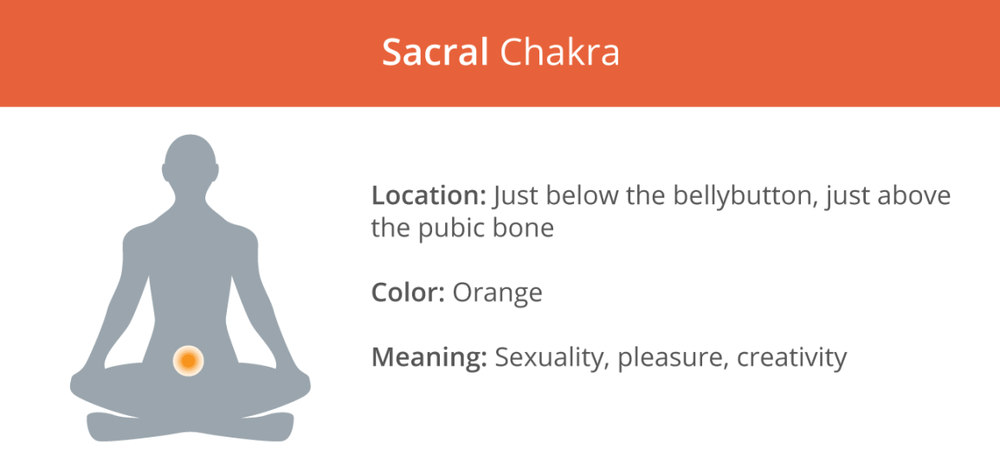
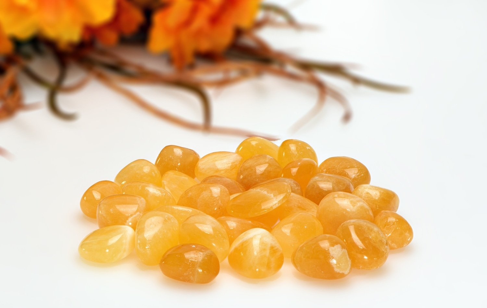
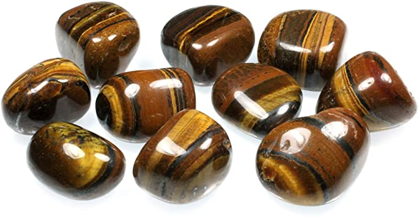
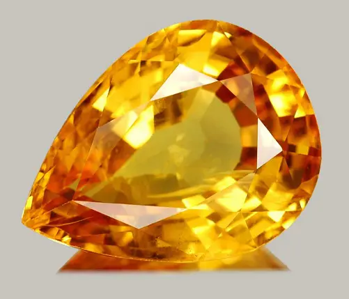

Sacral Chakra

Image from https://www.healthline.com/health/fitness-exercise/7-chakras
The sacral chakra, located in the lower abdomen, is associated with sensuality, sexuality, pleasure, sociability, and emotions.
The main colour of the sacral chakra is orange:
1. Orange Calcite

Image from https://crystalgemstoneshop.com/products/orange-calcite-polished-tumbled-gemstone
Assists in:
- Vitality
- Happiness and optimism
- Self-awareness
- Healing past traumas
- Sexuality
- Emotional health
An incredible stone for balancing emotions, Orange Calcite releases symptoms of fear and anxiety.
It also boosts our immune system and removes toxins from our physical and energetic body.
2. Tiger's Eye

Image from https://www.econespq.com/index.php?main_page=product_info&products_id=383875
Assists in:
- Happiness and optimism
- Good luck
- Protection
- Overcoming fear and anxiety
- Motivation
- Sexuality
One of the best stones in balancing our feminine and masculine energy, Tiger's Eye increases happiness and success, allowing us to better connect to the present while enjoying the simple things in life.
It also helps to slow down our metabolic rate and improve digestion.
3. Golden Topaz

Image from https://stylesatlife.com/articles/topaz-birthstones/
Assists in:
- Relief from depression
- Happiness and optimism
- Creativity
- Manifesting desires
- Good fortune and luck
A stunning stone of deep yellow hue, the Golden Topaz balances our emotions and increases our creativity.
It also boosts our confidence, and reduces fear, anger, and anxiety.
[Information adapted from https://7chakrastore.com/blogs/news/chakra-stones]